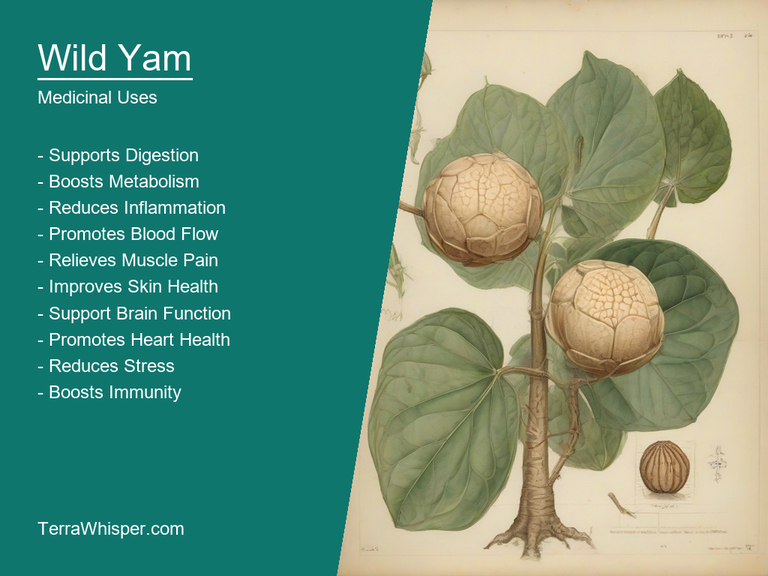
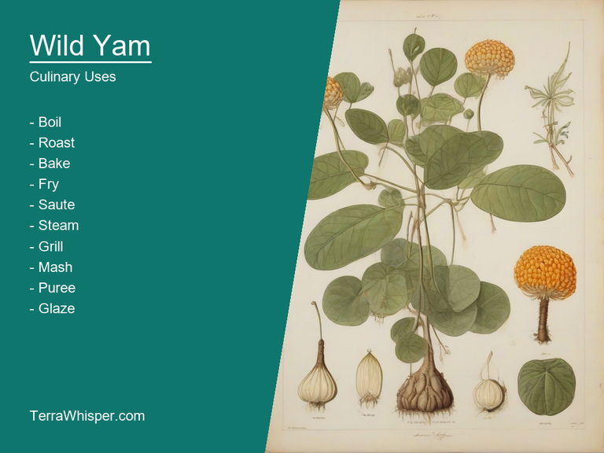
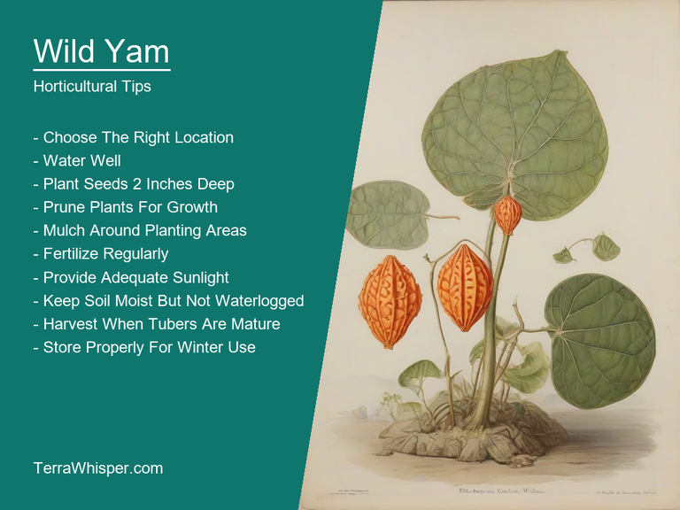
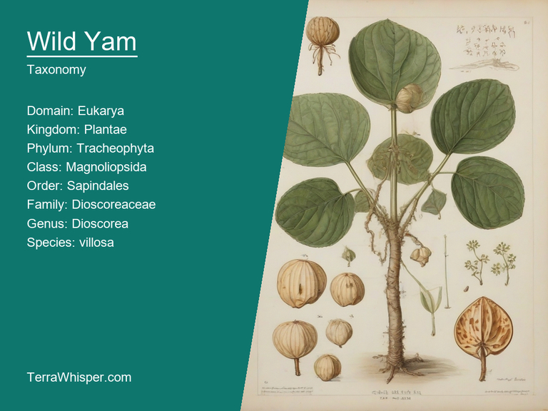
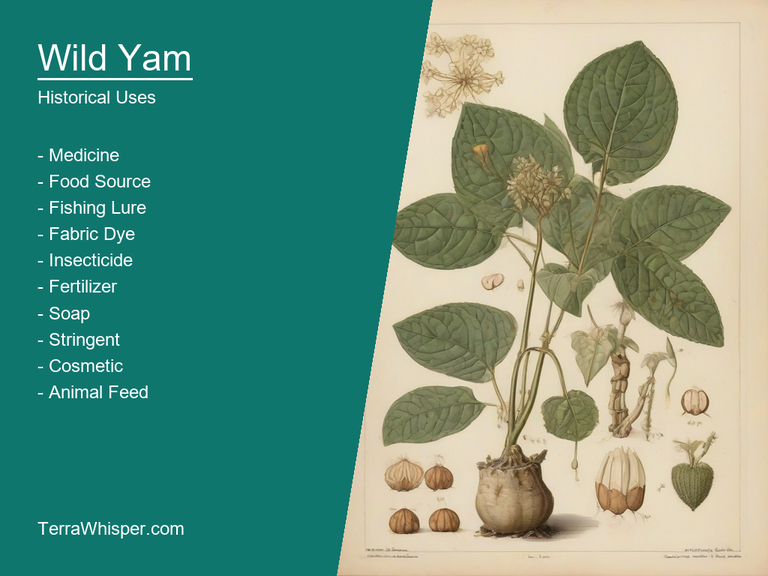

What To Know Before Using Wild Yam (Dioscorea Villosa)

Wild Yam, scientifically know as Dioscorea villosa, is a versatile medicinal herb that has been utilized for centuries in various cultures due to its healing properties and health benefits. It's not only known for its therapeutic uses but also serves as an ingredient in culinary dishes because of its distinct taste. Furthermore, the plant offers aesthetic appeal through its attractive growth and structure, making it a popular choice among garden enthusiasts for ornamental purposes.
The horticultural aspect of Wild Yam is quite interesting, with its ability to grow in various climates and regions ranging from tropical to subtropical zones. It thrives well in well-drained soils and prefers partial shade. When grown as an ornamental plant, it adds a striking touch to any garden setting with its long, slender vines and heart-shaped leaves. Its tuberous roots, often harvested for culinary use, can also be used creatively for decorative purposes.
Wild Yam holds great significance in botany as it has survived many evolutionary changes over time, becoming an essential part of various ecosystems around the globe. Historical evidence indicates that indigenous people have been utilizing its therapeutic properties for millennia. Ancient records show that this plant was widely used by Native Americans to treat a variety of medical conditions, including arthritis and gastrointestinal issues. Moreover, it has also been employed in traditional Chinese medicine as a remedy for female reproductive health concerns such as menstrual cramps and premenstrual syndrome.
In this article, you will discover what are the medicinal and culinary uses of wild yam. Then, you'll learn how to cultivate it, what is its botanical profile, and how it was used historically.
What Are The Medicinal Uses Of Wild Yam?
Wild yam (Dioscorea villosa) has many health benefits, such as regulating blood sugar levels, aiding in weight loss, and reducing inflammation for the heart. It is also used to treat various health conditions like arthritis, muscle strains or spasms, and menstrual cramps. The plant's ability to mimic certain hormones has led it to be an alternative option to address fertility issues in women.
The following illustration lists the most important uses of wild yam in medicine.

Wild yam contains a variety of medicinal constituents that contribute to its health benefits. This versatile plant is rich in vitamins A, C, and B6, as well as the essential minerals calcium, iron, and zinc. Additionally, it contains phytonutrients, like saponins, which are believed to be instrumental for some of wild yam's properties such as its anti-inflammatory capabilities. It is important to note that wild yam has a chemical compound known as diosgenin, an estrogen precursor used in the synthesis of birth control pills and other hormone supplements due to its similar structure with certain human hormones.
Different parts of the wild yam plant such as leaves, roots, and tubers can be utilized for medicinal purposes. The most common preparation is a tea made from dried or freshly harvested stems and roots. This tea can be consumed hot or cold and helps to relieve symptoms associated with stomach complaints like gas, bloating, constipation, and diarrhea. Tinctures and extracts of wild yam are also available in various forms, often made from the plant's tuberous root that acts as a base for supplements designed to support hormonal balance or improve cardiovascular health.
It is essential to be aware of any possible side effects when using wild yam due to its interactions with certain medications and other herbs. Consuming too much can result in bloating, upset stomach, and diarrhea, as well as skin irritation or rash for some individuals. Additionally, pregnant women should avoid using wild yam as it might cause early contractions. It is crucial to consult a healthcare professional before incorporating this herbal supplement into your routine, especially if you're already taking prescription medications or managing ongoing medical conditions.
What Are The Culinary Uses Of Wild Yam?
Wild Yam is a versatile plant that has been used for decades both medically and culinarily, and it can be incorporated into various dishes for a unique taste. From using its tuberous roots to preparing salads or soups with its leaves, this plant offers a wide range of possibilities in the kitchen.
The following illustration lists the most common uses of wild yam for culinary purposes.

The flavor profile is predominantly earthy and slightly sweet due to the high content of starch in its roots and tender flesh. It can also have hints of pepper or nuttiness, depending on how it's prepared. When combined with other ingredients, wild yam adds depth and complexity to any dish.
The edible parts of wild yam include the tuberous roots, young shoots, leaves, stems, and flowers. The tubers, which are the most commonly used part in culinary dishes, resemble white or red-skinned potatoes with a creamy, nutritious flesh. The leaves can be incorporated into salads for their delicate flavor and texture, while the tender young shoots can be added to soups or stews for added nuttiness.
To make the most of wild yam's culinary potential, it is essential to choose fresh and properly cleaned roots. Peel them carefully to remove any dirt or outer layer and then cut into desired shapes and sizes, depending on the dish being prepared. It is recommended to cook the tubers by boiling or steaming to soften their texture before incorporating them into other recipes for maximum flavor absorption.
Despite its numerous culinary applications, wild yam does come with certain potential side effects and toxicity concerns. Some people may experience stomach upset after consuming large amounts of this plant. Additionally, improper identification and use of the wrong part of the plant could lead to toxicities caused by similar-looking plants in the same family, so caution must always be taken when foraging or purchasing wild yam products.
How To Cultivate Wild Yam In Your Garden?
Wild Yam, scientifically called Dioscorea villosa, is a vining herbaceous perennial plant that belongs to the yam family (Dioscoreaceae) with its native habitat being in North America. It generally requires some specific growth conditions to thrive. These plants grow best in moist and well-drained soil rich in organic matter, like humus or compost. A pH level between 5.5 and 6.8 is ideal for the plant's development. The plant can grow up to a height of around 3 meters with stems that can be as long as 9 meters, depending on the available support. Provide a minimum sunlight requirement of about 4-6 hours per day to promote optimal growth.
The following illustration lists the most important tips to cutlitvate wild yam.

Planting tips for Wild Yam are crucial in ensuring its successful establishment and growth. Firstly, choose a suitable location with the required soil conditions mentioned earlier. Make a space between 2 to 3 feet around your desired planting area to allow room for stem climbing or spreading. Prepare the soil by incorporating compost before seedbed preparation. Sow the seeds during the fall season or early spring, as they require cold stratification (about 6-8 weeks) to germinate properly. Cover the seeds with a thin layer of organic mulch to maintain moisture and protect them from extreme temperatures.
Caring tips for Wild Yam include providing regular watering to maintain soil moisture but avoiding overwatering, which can lead to root rot. Fertilize the plant every 6-8 weeks during its growing season with a well-balanced organic fertilizer. Prune away dead or damaged leaves and stems throughout the year to encourage better growth of healthier foliage and fruits. Ensure that your plant has adequate support, such as trellising system to promote its vine climbing nature.
Harvesting tips for Wild Yam involve collecting the tubers when they've attained a mature size in late summer or early fall, typically after about 3-4 years of growth. To harvest, carefully dig up the plant and gently brush away dirt before rinsing off the tubers with water. Store them in a cool, dark location for future use.
Pests and diseases pose a threat to Wild Yam's health. Some common insects pester these plants include aphids, leafhoppers, and spider mites. Keep an eye out for symptoms of fungal diseases like powdery mildew. A strong immune system can help the plant fight off potential threats, but early detection and appropriate management methods should be used when needed.
What Is The Botanical Profile Of Wild Yam?
Wild Yam, with botanical name Dioscorea villosa, belongs to the domain Eukaryota, Kingdom Plantae, Phylum Magnoliophyta, Class Magnoliopsida, Order Solanales, Family Dioscoreaceae, Genus Dioscorea, and Species Villosa. It is also commonly known as Colic Root or Indian Yam.
The following illustration display the botanical profile of wild yam.

In different countries and cultures, it may be called by various names, such as Mexican Wild Yam in Mexico, Chinese Yam in China, and White Yam in the United States. Although they share the same botanical name, these variants might have slight differences in appearance, taste, and usage depending on their origin and cultivation.
This species is a perennial climbing vine that can grow up to 30 feet long. Its stems are slender with fleshy roots, which make them ideal for growing in various environments. The leaves are large, glossy, and green, featuring an oval-shaped blade with a wavy margin. Flowers have green calyx, blue or purple corolla, and yellow stamens. While being somewhat poisonous to animals due to the presence of dioscorine alkaloid, Wild Yam contains starch, which can be used as a source of food by humans.
This versatile plant is found throughout the world in various temperate climates where soil moisture levels are adequate for its growth. They generally prefer wooded areas, thickets, and riverbanks, with a well-drained, slightly acidic soil that allows them to thrive. The natural habitats of Wild Yam also include meadows, forests, and open fields.
As perennials, Wild Yams have a long life cycle, which includes the stages of germination, vegetative growth, reproduction, and death. Germination begins when environmental cues trigger the seed to sprout, followed by rapid vegetative growth that results in a mature plant with leaves, flowers, and roots. Reproduction can occur either sexually through flowering or asexually via underground stems (rhizomes). These yams die back during winter months, only to emerge anew the following spring as their life cycle continues.
What Are The Historical Uses Of Wild Yam?
The Origin of "Wild Yam"- As is usually assumed to derive from its scientific name Dioscorea villosa; however it has multiple colloquial names like 'waxy yam', 'rough yam,' and even the term, devil's horse marrow. These various appellations might be attributed due to differences in size (bigger than others), shape or texture of its tuberous root system which is a key characteristic that sets it apart from other Dioscorea species like Smooth Yam among numerous wild yam relatives across the world; also, these names showcases how diverse and complex our language can be when talking about even simple plants.
The following illustration lists the most well known historical uses of wild yam.

Etymologically speaking though 'Wild' suggests its growth in uncontrolled conditions which could mean it grows abundantly often covering acres of land without being nurtured by a farmer or gardener giving them an advantage to colonize lands, whereas "Yam" is believed as the common name for various tuberous root vegetables. The term 'Wild Yam' also serves in contrast with another important Dioscorea species called ‘cultivated yams' which are grown and harvested by humans after proper cultivation efforts to improve their yields or nutrient quality hence making them different from the other self sustaining members of this plant family.
The Cultural Significance - Throughout history, Wild Yam has not been primarily viewed as a crop that would be grown for food but rather it was valued in cultural contexts such rituals and ceremonies; often used to symbolize fertility due its tuberous roots' resemblence of baby human legs. It is also frequently related to the concept 'femininity', being an integral part, as a remedy or aid towards women's health issues especially for conditions that cause problems like abdominal pains and cramping experienced in cases when pregnancy complications are anticipated by traditional midwives who utilize Wild Yam roots' anti-inflammatory properties.
Mythology & Legends - Across numerous native communities where Dioscorea villosa is prevalent, it has been incorporated into a range of stories and legends that have become integral to their collective heritage. In some cases they are used as part of creation myths which narrate the origins or emergence on earth by these plant-god deities while other traditions focus more specifically around its medicinal uses; one such tale told within various indigenous tribes is about an evil magician who tried using Wild Yam to cure infertility but instead it resulted in a series of unexpected consequences that ended up affecting their community adversely.
The presence of "Wild Yam" across literature - Numerous writers and poets from the different linguistic zones have found inspiration for incorporating Wild yam into novels or poetic pieces they've written; a prime example is Thomas Gray, an English Poet who uses it as imagery when talking about natural beauty in his poem "Elegy Written In A Country Churchyard". Authors use their own cultural contexts to bring forth different nuances from this plant- the significance of its tuberous roots might be highlighted metaphorically while they touch upon themes like fertility, femininity or human mortality.
Folkloristic Uses - Beyond these symbolic and spiritual significations, Wild yams' practical uses have been a part of folk medicine practices across many communities for centuries; it has long served as an herbal remedy used to treat various conditions like arthritis due its anti-inflammatory properties or even menstrual cramps because traditionally prepared formulas were believed capable reducing symptoms related thereto.